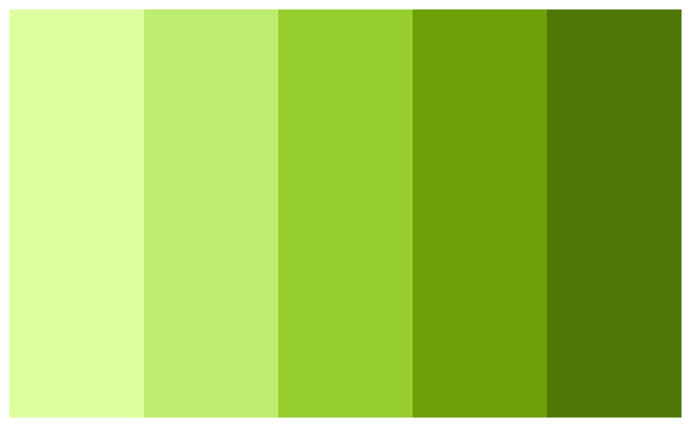
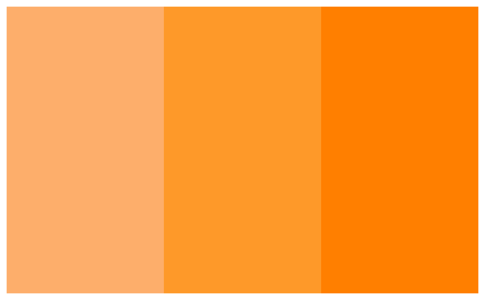

This function can be used to access the microshades palette desired. Each palette contains a base color paired with lighter versions of the base color.
microshades_palette(name, n, lightest = TRUE)Name of desired palette. Choices are:
micro_gray, micro_brown, micro_green,
micro_orange, micro_blue, micro_purple
micro_cvd_gray, micro_cvd_brown, micro_cvd_green,
micro_cvd_orange, micro_cvd_blue, micro_cvd_purple
Number of colors desired. Palettes contain 5 shades If omitted, uses all colours.
logical, if user requests n < 5 it will reutrn n lightest shades if TRUE. If FALSE, it will return n darkest shades
A microshades palette of colors.
Use this function to get the values needed to set the manual color values when applying to different plots
microshades_palette("micro_cvd_green")

microshades_palette("micro_orange", 3, lightest = FALSE)
